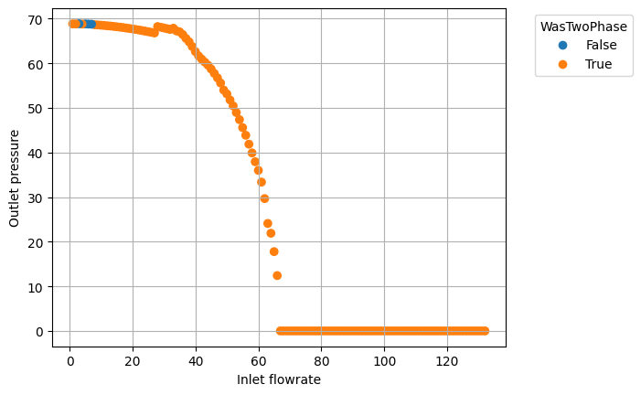
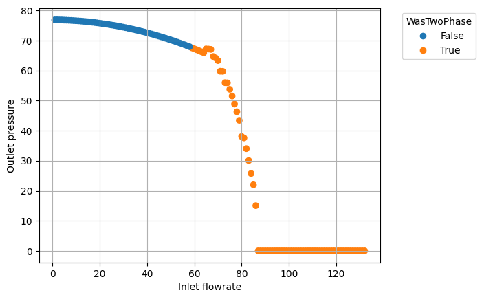

import pandas as pd
import matplotlib.pyplot as plt
from matplotlib.lines import Line2Ddf = pd.read_csv('./solver-out-2023-04-13_151111322_(temp=10C, inc=1).txt')
df.head()| InletPressureBara | InletFlowrateKgps | InletTemperatureCelsius | ReservoirPressureBara | WasTwoPhase | WasLiquid | FluidPressureAtReservoirBara | FluidTemperatureAtReservoirCelsius | FluidPhaseAtReservoir | PressureStatus | |
|---|---|---|---|---|---|---|---|---|---|---|
| 0 | 140 | 132 | 10 | 40 | False | True | 88.854647 | 6.548960 | Liquid | High |
| 1 | 140 | 131 | 10 | 40 | False | True | 89.481044 | 6.567070 | Liquid | High |
| 2 | 140 | 130 | 10 | 40 | False | True | 90.101845 | 6.684956 | Liquid | High |
| 3 | 140 | 129 | 10 | 40 | False | True | 90.724649 | 6.747347 | Liquid | High |
| 4 | 140 | 128 | 10 | 40 | False | True | 91.347769 | 6.637653 | Liquid | High |
colors = {False:'tab:blue', True:'tab:orange'}
def draw_plot(df_plot, pressureBara, temperatureCelsius):
print(f'Pressure = {pressureBara} Bara @ {temperatureCelsius}C')
df_plot = df_plot.dropna()
df_plot = df_plot[(df_plot['InletPressureBara'] == pressureBara)]
fig = plt.figure()
ax = fig.add_subplot()
ax.scatter(df_plot['InletFlowrateKgps'], df_plot['FluidPressureAtReservoirBara'], c=df_plot['WasTwoPhase'].map(colors))
ax.set_xlabel('Inlet flowrate')
ax.set_ylabel('Outlet pressure')
handles = [Line2D([0], [0], marker='o', color='w', markerfacecolor=v, label=k, markersize=8) for k, v in colors.items()]
ax.legend(title='WasTwoPhase', handles=handles, bbox_to_anchor=(1.05, 1), loc='upper left')
plt.grid()
plt.show()draw_plot(df, 69, 10)
draw_plot(df, 77, 10)Pressure = 69 Bara @ 10C
Pressure = 77 Bara @ 10C

df.head()| InletPressureBara | InletFlowrateKgps | InletTemperatureCelsius | ReservoirPressureBara | WasTwoPhase | WasLiquid | FluidPressureAtReservoirBara | FluidTemperatureAtReservoirCelsius | FluidPhaseAtReservoir | PressureStatus | |
|---|---|---|---|---|---|---|---|---|---|---|
| 0 | 140 | 132 | 10 | 40 | False | True | 88.854647 | 6.548960 | Liquid | High |
| 1 | 140 | 131 | 10 | 40 | False | True | 89.481044 | 6.567070 | Liquid | High |
| 2 | 140 | 130 | 10 | 40 | False | True | 90.101845 | 6.684956 | Liquid | High |
| 3 | 140 | 129 | 10 | 40 | False | True | 90.724649 | 6.747347 | Liquid | High |
| 4 | 140 | 128 | 10 | 40 | False | True | 91.347769 | 6.637653 | Liquid | High |
noTwoPhase = df.loc[(df['WasTwoPhase'] == False) & (df['FluidPressureAtReservoirBara'] > 0.01)]
noTwoPhase.head()| InletPressureBara | InletFlowrateKgps | InletTemperatureCelsius | ReservoirPressureBara | WasTwoPhase | WasLiquid | FluidPressureAtReservoirBara | FluidTemperatureAtReservoirCelsius | FluidPhaseAtReservoir | PressureStatus | |
|---|---|---|---|---|---|---|---|---|---|---|
| 0 | 140 | 132 | 10 | 40 | False | True | 88.854647 | 6.548960 | Liquid | High |
| 1 | 140 | 131 | 10 | 40 | False | True | 89.481044 | 6.567070 | Liquid | High |
| 2 | 140 | 130 | 10 | 40 | False | True | 90.101845 | 6.684956 | Liquid | High |
| 3 | 140 | 129 | 10 | 40 | False | True | 90.724649 | 6.747347 | Liquid | High |
| 4 | 140 | 128 | 10 | 40 | False | True | 91.347769 | 6.637653 | Liquid | High |
grouped = noTwoPhase.groupby('InletPressureBara')maxFR = noTwoPhase.loc[noTwoPhase.groupby('InletPressureBara')['FluidPressureAtReservoirBara'].idxmax()]maxFR.loc[maxFR['InletFlowrateKgps'] > 1]| InletPressureBara | InletFlowrateKgps | InletTemperatureCelsius | ReservoirPressureBara | WasTwoPhase | WasLiquid | FluidPressureAtReservoirBara | FluidTemperatureAtReservoirCelsius | FluidPhaseAtReservoir | PressureStatus | |
|---|---|---|---|---|---|---|---|---|---|---|
| 9501 | 69 | 3 | 10 | 40 | False | True | 68.873411 | 9.826676 | Liquid | High |
| 8446 | 77 | 2 | 10 | 40 | False | True | 76.904508 | 10.159886 | Liquid | High |
df.loc[(df['InletPressureBara'] == 77) & (df['InletFlowrateKgps'] <= 3)]| InletPressureBara | InletFlowrateKgps | InletTemperatureCelsius | ReservoirPressureBara | WasTwoPhase | WasLiquid | FluidPressureAtReservoirBara | FluidTemperatureAtReservoirCelsius | FluidPhaseAtReservoir | PressureStatus | |
|---|---|---|---|---|---|---|---|---|---|---|
| 8445 | 77 | 3 | 10 | 40 | False | True | 76.875026 | 9.916840 | Liquid | High |
| 8446 | 77 | 2 | 10 | 40 | False | True | 76.904508 | 10.159886 | Liquid | High |
| 8447 | 77 | 1 | 10 | 40 | False | True | 76.895610 | 9.810933 | Liquid | High |